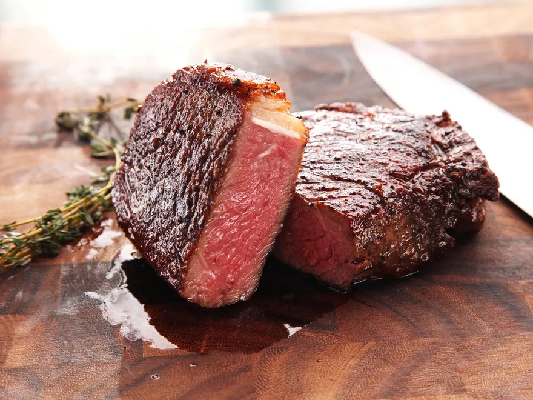

Steak

Description
Tender and Juicy, you will love this simple and delicious recipe. This steak has been perfected by my dad
over his years psent slaving away on a BBQ.
Ingredients
- Steak
- Salt and Pepper
- Olive Oil (or alternative)
Instructions
Preparation
- place the steak and a wooden chopping baord and lightly salt both sides and the edge
- then cover the steak with a dry cloth and plcae in a fridge for 4-5 hours
Cooking
- Bring a BBQ or pan up to High heat and lightly cover the steak in oil
-
Cook the steak for 5 minutes on the first side, flip once and cook for 3-4 minutes on the other (you may
need more or less depending on the thickness
- Wrap the steak in foil and let rest for 4-5 minutes before seasoning to taste and serving